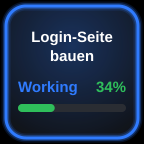

Claude Status
Zeigt den Titel einer Session, ihren Zustand und wie viel Kontext schon belegt ist. Neue Sessions landen automatisch auf freien Tasten, oder du legst eine Taste fest auf einen Projektordner.
- Kurz drücken
- öffnet genau diese Session in Claude Desktop.
- Lang drücken
- bricht die laufende Antwort ab.